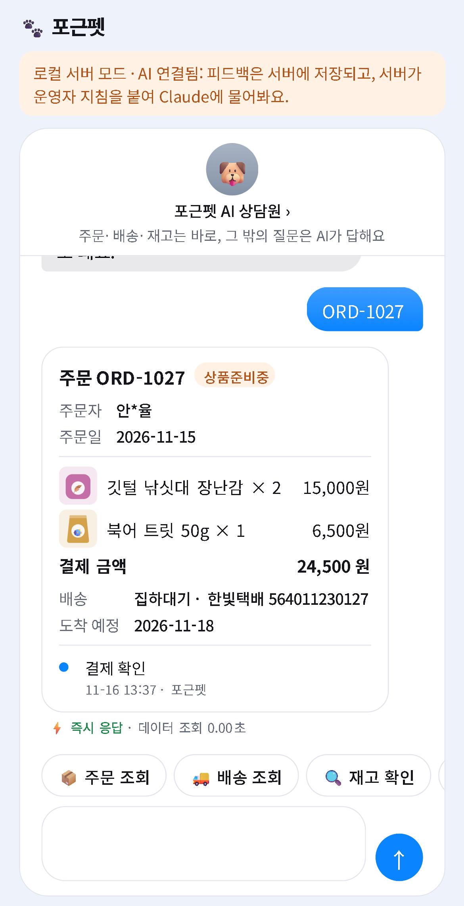
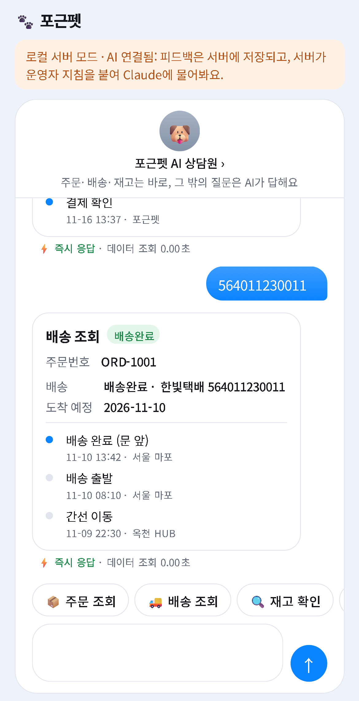
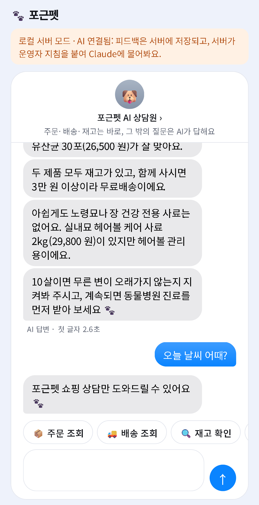
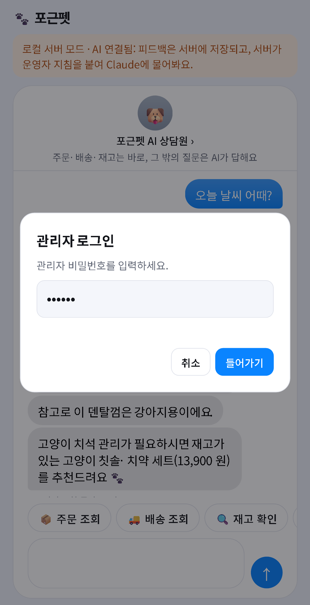
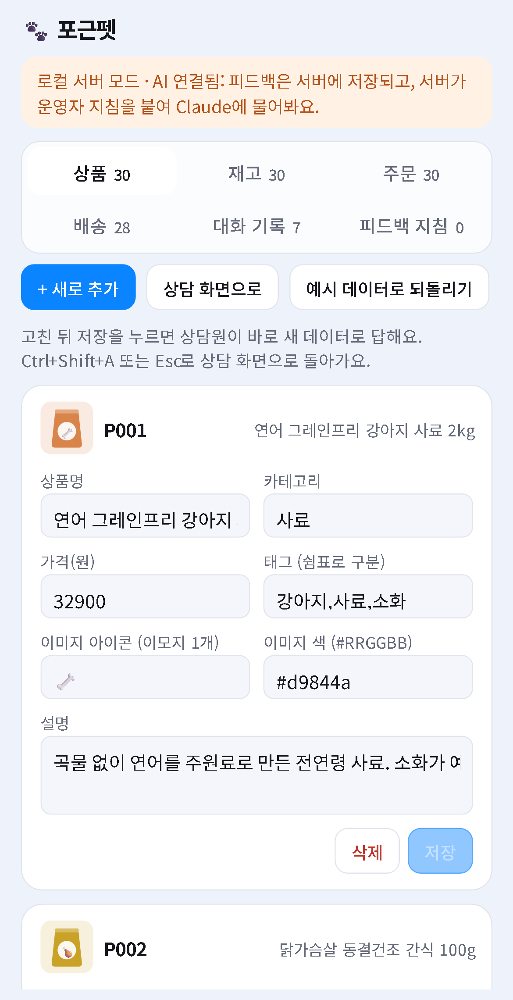
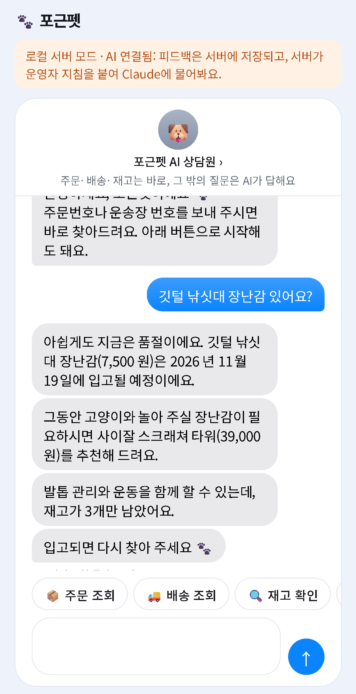
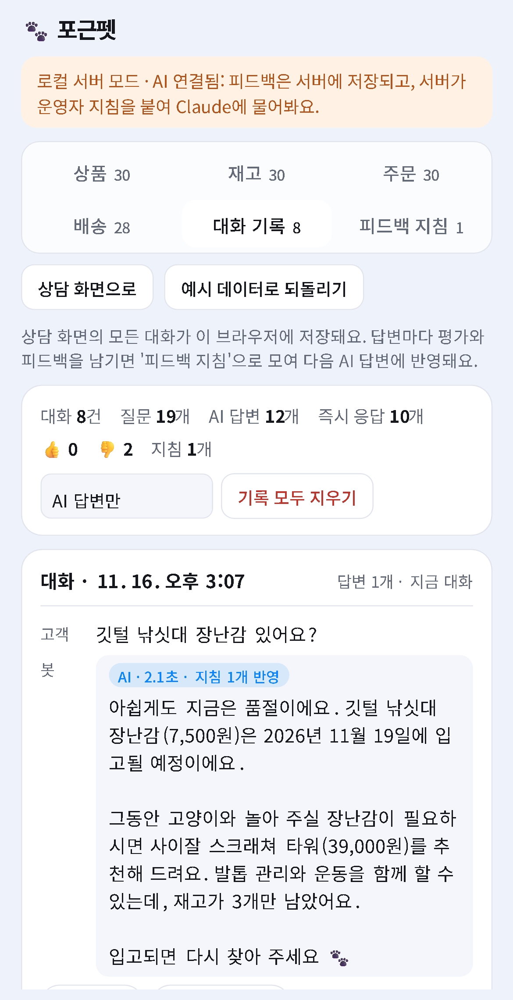

상담 기능 6개와 관리자·피드백 기능 4개, 모두 10개 기능이 통과했습니다. 관리자가 남긴 피드백이 서버를 거쳐 다음 AI 답변에 반영되는 것까지 실제 화면으로 확인했습니다.
테스트 환경
| 대상 | chatbot-tabs/pet-shop-chat.html, 로컬 서버 chatbot-tabs/serve.cjs |
| 실행 방식 | 로컬 서버 모드: 상점 데이터는 브라우저, 피드백은 서버 파일 data/feedback.json에 저장 |
| AI | Claude Opus 5.5, 서버가 운영자 지침을 붙여 호출 |
| 화면 크기 | 휴대폰 화면(390×760)으로 캡처 |
| 데이터 | 가상 데이터: 상품 30 · 재고 30 · 주문 30 · 배송 28건 |
기능별 결과 요약
| # | 기능 | 시험 내용 | 응답 | 판정 |
|---|
| 1 | 상담 첫 화면 | 서버 모드 감지, 인사말, 빠른 메뉴 표시 | - | 통과 |
| 2 | 주문·운송장 조회 | 주문번호·운송장 번호로 주문 카드와 배송 이력 조회 | 0.00초 | 통과 |
| 3 | 재고 확인 | 카테고리 → 상품 2단계 선택, 재고 카드 | 0.00초 | 통과 |
| 4 | 상품 추천 | 반려동물 선택 후 추천 목록 | 0.00초 | 통과 |
| 5 | AI 답변 · 말풍선 나누기 | 긴 질문에 데이터 기반 답변, 여러 말풍선으로 나눔 | 2.6초 | 통과 |
| 6 | 주제 밖 거절 | 쇼핑과 관계없는 질문 거절 | 0.8초 | 통과 |
| 7 | 관리자 로그인 · 데이터 편집 | 단축키 + 비밀번호 진입, 상품 데이터 편집 화면 | - | 통과 |
| 8 | 대화 기록 · 피드백 | 대화 기록 확인, 답변에 평가와 피드백 저장 | - | 통과 |
| 9 | 피드백 지침 (서버) | 서버가 AI에 붙이는 지침 미리보기 | - | 통과 |
| 10 | 지침 반영 | 피드백 후 다른 품절 상품 질문에 지침대로 답변 | 2.1초 | 통과 |
응답은 질문을 보낸 순간부터 첫 글자가 보일 때까지의 시간입니다. 화면 캡처 과정에서 AI 답변을 4회 받았습니다.
기능별 상세 · 상담 화면
기능 1상담 첫 화면통과
페이지를 열면 로컬 서버를 감지해 동작 방식을 알려 주고, 인사말과 빠른 메뉴를 보여 줍니다.
- 방법
- http://localhost:5501 접속
- 기대
- 서버 모드 안내, 인사말, 빠른 메뉴 4개(주문 조회·배송 조회·재고 확인·상품 추천)
- 결과
- "로컬 서버 모드 · AI 연결됨" 안내가 뜨고, 인사말과 메뉴가 표시됨
기능 2주문·운송장 조회통과
주문번호나 운송장 번호를 보내면 AI를 거치지 않고 데이터에서 바로 찾아 카드로 보여 줍니다.
- 입력
- ORD-1027 / 564011230011
- 기대
- 주문 상태·상품·금액·배송 정보, 주문자 이름은 가림
- 결과
- 상품준비중, 상품 2개(상품 이미지 포함), 결제 24,500원, 주문자 "안*율". 운송장은 ORD-1001 배송완료 이력 표시. 응답 0.00초

주문 조회

운송장 조회
기능 3재고 확인통과
상품이 30개라 카테고리를 먼저 고르고 상품을 고르는 2단계로 찾습니다.
- 방법
- 재고 확인 → 산책용품 → 고양이 캐리어 백팩
- 기대
- 상품 이미지, 재고 상태, 가격. 창고 위치는 표시하지 않음
- 결과
- "4개 남음", 49,000원 표시. 창고 정보 없음. 응답 0.00초
기능 4상품 추천통과
반려동물 종류를 고르면 해당 상품과 공용 상품 중 재고가 있는 것을 먼저 추천합니다.
- 방법
- 상품 추천 → 고양이
- 기대
- 고양이·공용 상품 목록, 이미지와 가격, 더 자세한 상담 유도
- 결과
- 참치 습식 캔, 두부 모래, 스크래쳐 타워, 순면 방석 4개 추천. "나이, 크기, 고민을 알려 주시면…" 안내. 응답 0.00초
기능 5AI 답변 · 말풍선 나누기통과
자유 질문은 AI가 상점 데이터를 근거로 답하고, 긴 답변은 읽기 쉽게 여러 말풍선으로 나눠 보냅니다.
- 입력
- 10살 고양이가 털이 푸석하고 변이 무른데, 사료랑 영양제 추천해 주세요
- 기대
- 데이터에 있는 상품과 가격으로 답변, 말풍선 여러 개
- 결과
- 오메가3 영양제(28,900원), 고양이 유산균(26,500원), 헤어볼 사료(29,800원)로 답변. 가격 모두 데이터와 일치. 노령묘 전용 사료가 없음을 안내하고 병원 진료 권유. 말풍선 6개, 첫 글자 2.6초

AI 답변 · 말풍선 6개
기능 6주제 밖 거절통과
쇼핑과 관계없는 질문에는 정해진 문장으로만 답합니다.
- 입력
- 오늘 날씨 어때?
- 기대
- 날씨에 답하지 않고 쇼핑 상담만 가능하다고 안내
- 결과
- "포근펫 쇼핑 상담만 도와드릴 수 있어요" 한 문장으로 답변. 첫 글자 0.8초
기능별 상세 · 관리자와 피드백
기능 7관리자 로그인 · 데이터 편집통과
화면에 관리자 버튼을 두지 않고, 단축키와 비밀번호로만 들어갑니다.
- 방법
- Ctrl+Shift+A (한글 입력 상태에서 시험) → 비밀번호 입력
- 기대
- 비밀번호 창, 진입 후 상품·재고·주문·배송·대화 기록·피드백 지침 6개 탭
- 결과
- 비밀번호 창이 뜨고 입력값은 가려짐. 진입 후 6개 탭과 상품 편집 카드(이미지 미리보기 포함) 표시
관리자 화면 캡처에서는 개인정보 보호를 위해 API 키 입력 상자를 가렸습니다.

비밀번호 창

상품 데이터 편집
기능 8대화 기록 · 피드백통과
상담 화면의 모든 대화가 저장되고, 관리자는 답변마다 평가와 피드백을 남깁니다.
- 방법
- 대화 기록 탭 → "덴탈껌 있어요?" AI 답변에 "고쳐야 해요" + 피드백 작성 → 저장
- 피드백
- 품절 상품 문의에는 첫 말풍선에서 '아쉽게도 지금은 품절이에요'라고 먼저 말하고, 대체 상품은 1개만, 마지막은 '입고되면 다시 찾아 주세요'로 끝낸다
- 결과
- "서버에 저장됨 · 다음 AI 답변부터 지침으로 반영돼요" 표시. 답변마다 경로(AI)와 시간(3.5초)이 함께 기록됨
기능 9피드백 지침 (서버)통과
피드백은 서버 파일에 저장되고, 서버가 AI 요청마다 지침으로 붙입니다. 어느 브라우저에서 열어도 같은 지침을 씁니다.
- 방법
- 피드백 지침 탭 열기
- 기대
- 서버가 실제로 붙이는 지침 전문, 사용 중인 지침 수
- 결과
- "서버가 AI에게 붙이는 운영자 지침 · 1개 사용 중" 표시. 지침 문장에 그때의 고객 질문과 고쳐야 했던 답변이 함께 들어감. 지침마다 켜기·끄기·수정·삭제 가능
기능 10지침 반영통과
피드백을 남긴 상품(덴탈껌)이 아닌 다른 품절 상품을 새 대화에서 물어, 지침이 반영되는지 확인했습니다.
- 입력
- 깃털 낚싯대 장난감 있어요? (새 대화)
- 기대
- 피드백에 적은 형식대로 답변, 기록에 반영된 지침 수 표시
- 결과
- 첫 말풍선 "아쉽게도 지금은 품절이에요" → 입고 예정일 11월 19일 → 대체 상품 1개(스크래쳐 타워, 재고 3개) → 마지막 "입고되면 다시 찾아 주세요". 대화 기록에 "AI · 2.1초 · 지침 1개 반영"
테스트에 쓴 피드백은 캡처 후 다시 꺼 두었습니다.

지침이 반영된 답변

기록: 지침 1개 반영